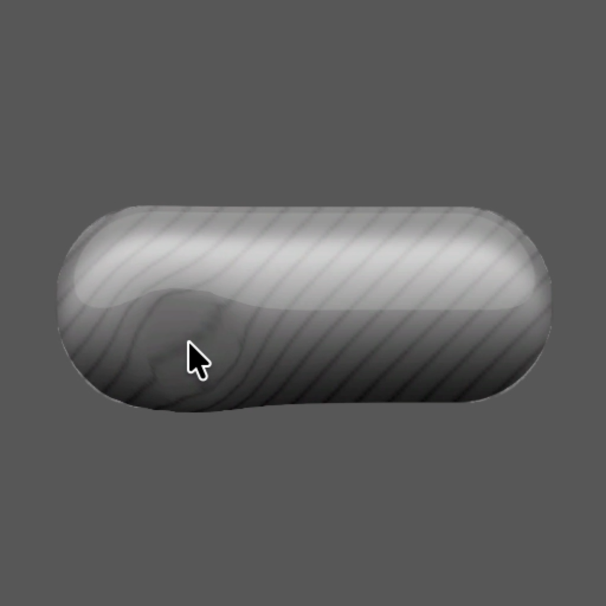

Liquid UI Button

Real-Time VFX & Animation Systems • Shaders • Tools • Pipelines

The Liquid UI Button FX system is a vertex-deforming Unlit UI shader designed for Unity 2022 URP.
It creates a physically inspired “egg-yolk” liquid response to pointer interaction:
This system is driven by:
The effect is entirely vertex-based, making it efficient and scalable across UI.
A stylized, looping energy rim FX built in Unity URP that combines sprite-based masking with procedural noise, constant-speed angular flow, and HDR glow control.
Designed for SpriteRenderer and sprite-atlas workflows, it supports both UV and world-space noise, enabling flexible use across UI and gameplay effects.